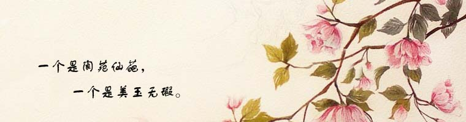

|  |
| 红楼梦十二曲――引子 年代：【清】 作者：【曹雪芹】 开辟鸿蒙，谁为情种？ 都只为风月情浓。 奈何天，伤怀日，寂寥时，试遣愚衷。 因此上演出这悲金悼玉的红楼梦。 |
红楼梦十二曲――枉凝眉 |
| 红楼梦十二曲――飞鸟各投林 年代：【清】 作者：【曹雪芹】? 为官的家业凋零，富贵的金银散尽。 有恩的死里逃生，无情的分明报应。 欠命的命已还，欠泪的泪已尽： 冤冤相报自非轻，分离聚合皆前定。 欲知命短问前生，老来富贵也真侥幸。 看破的遁入空门，痴迷的枉送了性命。 好一似食尽鸟投林，落了片白茫茫大地真干净！ |
| 红楼梦十二曲――恨无常 年代：【清】 作者：【曹雪芹】 喜荣华正好，恨无常又到， 眼睁睁把万事全抛， 荡悠悠芳魂销耗。 望家乡路远山高。 故向爹娘梦里相寻告： 儿命已入黄泉， 天伦呵，须要退步抽身早！ |
| 红楼梦十二曲――乐中悲 年代：【清】 作者：【曹雪芹】? 襁褓中，父母叹双亡。 纵居那绮罗丛中谁知娇养？ 幸生来英豪阔大宽宏量， 从未将儿女私情，略萦心上。 好一似霁月光风耀玉堂。 厮配得才貌仙郎， 博得个地久天长， 准折得幼年时坎坷形状。 终久是云散高唐，水涸湘江。 这是尘寰中消长数应当，何必枉悲伤? |
| 红楼梦十二曲――虚花悟 年代：【清】 作者：【曹雪芹】? 将那三春勘破，桃红柳绿待如何？ 把这韶华打灭，觅那清淡天和。 说什么天上夭桃盛，云中杏蕊多， 到头来谁见把秋捱过？ 则看那白杨村里人呜咽， 青枫林下鬼吟哦， 更兼着连天衰草遮坟墓。 这的是昨贫今富人劳碌， 春荣秋谢花折磨。 似这般生关死劫谁能躲？ 闻说道西方宝树唤婆娑， 上结着长生果。 |
| 红楼梦十二曲――喜冤家 年代：【清】 作者：【曹雪芹】? 中山狼，无情兽，全不念当日根由。 一味的娇奢淫荡贪欢媾。 觑着那侯门艳质同蒲柳， 作贱的公府千金似下流。 叹芳魂艳魄，一载荡悠悠。 |
| 红楼梦十二曲――好事终 年代：【清】 作者：【曹雪芹】 画梁春尽落香尘。 擅风情，秉月貌， 便是败家的根本。 箕裘颓堕皆从敬， 家事消亡首罪宁。 宿孽总因情！ |
| 红楼梦十二曲――聪明累 年代：【清】 作者：【曹雪芹】? 机关算尽太聪明，反算了卿卿性命。 生前心已碎，死后性空灵。 家富人宁，终有个家亡人散各奔腾。 枉费了意悬悬半世心， 好一似荡悠悠三更梦。 急喇喇似大厦倾，昏惨惨似灯将尽。 呀！一场欢喜忽悲辛，叹人世终难定! |
| 红楼梦十二曲――终身误 年代：【清】 作者：【曹雪芹】? 都道是金玉良缘，俺只念木石前盟。 空对着山中高士晶莹雪， 终不忘世外仙姝寂寞林。 叹人间美中不足今方信。 纵然是齐眉举案，到底意难平。 |
| 红楼梦十二曲――晚韶华 年代：【清】 作者：【曹雪芹】? 镜里恩情，更那堪梦里功名！ 那美韶华去之何迅，再休提绣帐鸳衾。 只这戴朱冠披凤袄，也抵不了无常性命。 虽说是人生莫受老来贫，也须要阴骘积儿孙。 气昂昂头戴簪缨，光灿灿胸悬金印， 威赫赫爵禄高登，昏惨惨黄泉路近！ 问古来将相可还存？ 也只是虚名儿后人钦敬。 |
| 红楼梦十二曲――留馀庆 年代：【清】 作者：【曹雪芹】? 留馀庆，留馀庆，忽遇恩人； 幸娘亲，幸娘亲，积得阴功。 劝人生济困扶穷， 休以俺那爱银钱忘骨肉的狠舅奸兄。 正是乘除加减，上有苍穹! |
| 红楼梦十二曲――世难容 年代：【清】 作者：【曹雪芹】? 气质美如兰，才华馥比仙。 天生成孤僻人皆罕。 你道是啖肉食腥膻，视绮罗俗厌； 却不知好高人愈妒，过洁世同嫌。 可叹这青灯古殿人将老， 辜负了红粉朱楼春色阑， 到头来依旧是风尘肮脏违心愿。 好一似无瑕白玉遭泥陷， 又何须王孙公子叹无缘？ |
| 红楼梦十二曲――分骨肉 年代：【清】 作者：【曹雪芹】? 一帆风雨路三千， 把骨肉家园，齐来抛闪。 恐哭损残年， 告爹娘休把儿悬念。 自古穷通皆有定， 离合岂无缘？ 从今分两地，各自保平安。 奴去也，莫牵连! |